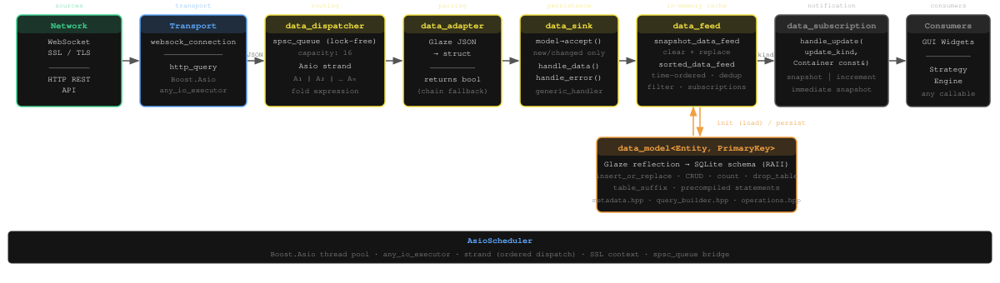

DataHub
Универсальный асинхронный конвейер данных с опциональным хранением в БД и подписками в рантайме.
Архитектура
Диаграмма ниже показывает полный конвейер данных — от сырых байт из сети до уведомлений подписчиков в памяти. Каждый компонент реализует единую концепцию data acceptor и может быть исключён из конвейера, если избыточен. Например, стакан заявок не имеет представления в БД: data adapter передаёт данные напрямую в data feed (data sink опускается).

Обзор
DataHub — header-only библиотека на C++23, реализующая полный асинхронный конвейер данных без накладных расходов в рантайме благодаря статическому полиморфизму и compile-time рефлексии. Она соединяет сетевые источники (WebSocket, HTTP REST) с типизированными коллбэками подписчиков, с опциональным хранением в базе данных.
Основные компоненты
Принимает сырые JSON-строки от любого транспорта. Передаёт каждое сообщение нескольким адаптерам, которые пытаются его декодировать через C++23 статическую рефлексию.
Десериализует JSON-строку в типизированный C++-структуру с помощью Glaze. Вызывает
нижестоящий обработчик и возвращает его результат bool —
false означает «не обработано», что позволяет передать сообщение
следующему адаптеру в цепочке диспетчера.
Собирает данные из разных потоков, сохраняет их и передаёт в Data Feed, нацеленный на runtime-подписки.
DAO с RAII-созданием таблицы при конструировании. Использует compile-time рефлексию Glaze для получения имени таблицы, типов столбцов и первичного ключа — без ручного написания SQL-схемы.
Структурированный in-memory кэш, обеспечивающий быстрый доступ к актуальным данным для подписчиков.
Интерфейс уведомлений в рантайме.